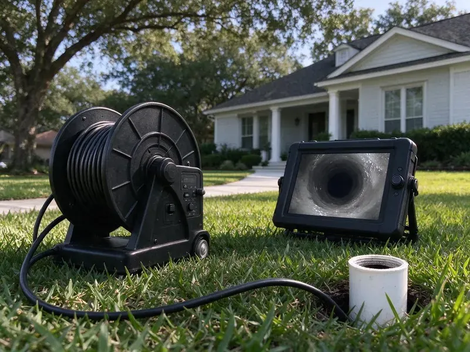

Sewer Cleaning in Parkersburg, WV
When sewer issues strike your Parkersburg, WV property, you need prompt, effective service. GJK Plumbing offers complete sewer cleaning solutions.
- Satisfaction Guaranteed
- Satisfaction Guaranteed
- Video Proof of Results
- Upfront Pricing

Need Expert Sewer Cleaning in Parkersburg, WV?
Our trained technicians are ready to tackle any sewer problem, so your system works smoothly.
Your Local Choice for Sewer Cleaning in Parkersburg, WV
GJK Plumbing specializes in careful sewer cleaning for homes across Parkersburg, WV. We use advanced tools like augers and hydro jetting equipment to clear stubborn blockages caused by grease, roots, and debris.
Our expertise includes:
- Clearing tree root intrusions effectively.
- Removing grease and sludge buildup.
- Hydro jetting to scour grease and scale from main lines

Additional Drain Services Services in Parkersburg, WV
From stubborn kitchen clogs to main sewer backups, our drain services in Parkersburg, WV restore full flow fast and keep it that way.


Customers
Why Choose GJK Plumbing for Sewer Cleaning in Parkersburg, WV?
Ignoring sewer issues can lead to expensive repairs and health hazards. GJK Plumbing provides timely and effective sewer cleaning to keep minor blockages from growing into significant problems.
- Root Removal, Our cutting heads cut through root masses that grow into joints and cracks in older sewer pipe.
- Advanced Tools, We use professional diagnostic and cleaning equipment, such as sewer cameras and hydro jetters, to precisely identify and clear blockages.
- Lasting Solutions, Our goal is not just to clear a clog, but to provide solutions that prevent its recurrence, saving you time and money in the long run.
Citywide Coverage
From historic districts to newer developments, our team provides steady, high-quality sewer cleaning across all of Parkersburg. You can count on us for prompt service, wherever you are within the city limits.
Experienced Team
Our sewer techs run main line machines daily and can feel the difference between roots, grease and a collapsed section through the cable. That experience means less guessing and fewer repeat visits.
Safety-First Approach
Safety is our top priority during every sewer cleaning job. We follow all local Parkersburg and West Virginia plumbing codes and industry best practices to protect your property and our team.
Trusted Certified Parkersburg Plumbing Services Professionals
At GJK Plumbing, we take pride in providing licensed, certified plumbing services throughout Parkersburg, WV. Backed by leading industry credentials, our experienced plumbers combine technical skill with genuine customer care. Whether it is repair, installation, or maintenance, we follow strict safety and quality standards to deliver long-lasting results you can trust.
Call Us Now PHCC Plumbing Contractor Recognition
PHCC Plumbing Contractor Recognition Better Business Bureau (BBB) Accreditation
Better Business Bureau (BBB) Accreditation Angi Certified Pro
Angi Certified Pro ISO 9001 Quality Management Certification
ISO 9001 Quality Management CertificationTrusted Sewer Cleaning Services in Parkersburg, WV
Grease and Scale Buildup Cleaning in Parkersburg, WV
Grease from kitchens cools and coats the inside of sewer pipes, and minerals in the water bond with it to form a stubborn crust. Testing well water every year or so is a smart habit in West Virginia, especially after flooding or nearby ground disturbance. Over years the pipe opening shrinks until flow slows to a trickle. A cable can punch a hole through, but jetting cleans the walls back to full size. We choose the method based on pipe material and condition. Cleaning before the line fully closes spares you money and stress.

Emergency Sewer Backup Cleaning in Parkersburg
If sewage is coming up through a shower or floor drain, stop using water and call at once. We send a tech with a main line machine, protective gear and a wet vac. The first priority is restoring flow so wastewater can leave the house. We then help clean and disinfect the affected area. Our photos and notes can support an insurance claim.
Clay and Orangeburg Sewer Lines in Parkersburg
Older properties may still have vitrified clay or even Orangeburg fiber pipe running to the street. Clay joints are open invitations for roots, and Orangeburg can flatten under soil weight. We clean these lines gently and use the camera to map joints and soft spots. If the pipe is failing, we will tell you plainly and show the footage. Cleaning keeps you running while you plan a replacement.
Emergency Sewer Cleaning in Parkersburg
A sudden sewer backup is a plumbing emergency that requires immediate attention. GJK Plumbing offers emergency sewer cleaning across Parkersburg to quickly resolve critical blockages and prevent extensive water damage and health hazards. Our emergency response team is equipped to diagnose and clear severe clogs, often caused by tree roots or collapsed pipes, restoring your sewer function as fast as possible, even after regular business hours.
Dealing with Grease Buildup in Parkersburg, WV
Grease accumulation is a common cause of sewer line clogs, particularly from kitchen drains. Over time, grease solidifies and narrows the pipe, leading to slow drains and backups. Our cleaning methods, especially hydro jetting, are highly effective at breaking down and flushing away grease buildup, restoring proper flow to your pipes in Parkersburg.
Sewer Cleaning Versus Sewer Repair in Parkersburg, WV
Cleaning removes what is in the pipe, but it cannot fix a crack, a belly or a collapsed section. If your sewer backs up every few months, the camera will often show why. We compare the yearly cost of maintenance cleanings to a spot repair, lining or replacement. Sometimes regular cleaning is the smart move for a few years. Other times a repair now saves more over time, and we show you the math.
Preventative Sewer Maintenance in Parkersburg
Proactive maintenance is key to avoiding costly sewer emergencies. GJK Plumbing offers preventative sewer cleaning in Parkersburg designed to keep your main line clear before problems arise. Regular hydro jetting or professional snaking can remove building debris, grease, and mineral deposits, especially helpful for homes with older plumbing or those prone to tree root intrusion. This helps maintain optimal flow and extends the lifespan of your entire sewer system.

Sewer Cleanout Installation in Parkersburg
Some homes have no accessible cleanout, which forces techs to pull a toilet or go through a roof vent. We can install a two-way cleanout near the foundation so the line can be cleaned from either direction. This makes every future cleaning faster and cheaper. It also gives a clear access point for camera inspections. Cleanout installation is done to local code with any needed permit.
Sewer Cleaning Near Me in Parkersburg, WV
When you search for sewer cleaning near me in Parkersburg, you want a local company that gets your needs. GJK Plumbing is your neighborhood expert, providing fast and dependable service. We are familiar with the local plumbing infrastructure and common issues affecting homes in West Virginia.
Our dedication to the Parkersburg community means we are always ready to respond to your sewer cleaning needs. We pride ourselves on being accessible and delivering prompt, professional service right to your doorstep.
GJK Plumbing at a Glance
- Fully licensed plumbing team covering Parkersburg, WV
- 24/7 emergency service with same-day scheduling
- Clear written estimates, no hidden fees
- 4.8-star rated by 832+ West Virginia customers
Parkersburg Map
Parkersburg Information
- Population
- 29,025
- Area codes
- 304/681/740
- Service area
- Parkersburg and communities within 40 miles
- Nearby
- Vienna, New Martinsville, Cross Lanes, Teays Valley
Older clay and cast iron sewer laterals plus root-seeking trees make main line cleaning a routine need for many homes in Parkersburg, WV.
Expert Services
Trust our professionals for reliable GJK Plumbing solutions in Parkersburg, WV.
Our Specialized Plumbing Services in Parkersburg, WV
At GJK Plumbing, we provide a complete range of plumbing services across Parkersburg, WV. From leak detection to full system installations, our team ensures fast, precise, and affordable service for both residential and commercial properties. Explore our core services below:


How Our Sewer Cleaning Process Works in Parkersburg, WV
We follow a clear, step-by-step approach to sewer cleaning, from initial diagnosis to complete blockage removal, serving all of Parkersburg, WV.
Request a Quote
Call (681) 223-3607 and describe which fixtures are backing up and when it started. We give you a price range and dispatch a tech with main line equipment.
Locate and Clear
We find your cleanout or best access point and run the right cable or jetter. Roots and debris are cut and removed until the line flows freely.
Inspect and Report
A camera run confirms the line is clean and checks for damage. You get the findings and our advice before we leave.
Frequently Asked Questions About Sewer Cleaning in Parkersburg
The cost of sewer cleaning in Parkersburg, WV can range from $200 for a minor clog cleared with a snake to $600 or more for complex hydro jetting or root removal. Factors like the severity of the blockage, the method required, and the accessibility of the sewer line all affect the final price. We provide upfront pricing before any work begins.
Most standard sewer cleaning jobs in Parkersburg can be completed within 1 to 3 hours, depending on the severity and nature of the clog. More complex issues, like extensive root removal or a needed camera inspection, might take longer. We will provide an expected timeline during our initial assessment.
Yes. We provide a written guarantee on sewer cleaning, and the length depends on the line condition we find on camera. We explain the terms before starting.
For most homes in Parkersburg, an annual or twice-yearly sewer cleaning is sufficient for preventative maintenance, especially if you have older pipes or mature trees nearby. If you have frequent clogs, more regular cleaning might be necessary. Your plumber can suggest a schedule based on your situation.
While minor drain clogs can sometimes be handled with DIY solutions, main sewer line blockages need professional tools and expertise. Trying to clear a sewer line without proper equipment can aggravate the problem or damage your pipes.
Cleaning does not require a permit. Installing a cleanout or repairing the sewer usually does, and we handle that paperwork.
Common signs include multiple drains backing up at once, gurgling noises from toilets or drains, foul odors coming from drains, and water pooling in your yard, especially near the sewer line. If you notice any of these in your Parkersburg home, it is time to call a professional.
Drain cleaning typically refers to clearing clogs in smaller branch lines leading from individual fixtures, like sinks or tubs. Sewer cleaning, on the other hand, addresses blockages in the main sewer line that collects wastewater from all household drains and carries it to the municipal system. Sewer clogs affect all drains, while drain clogs are usually isolated.
What People Are Saying About Our Plumbing Experts?

Robert G.
The trenchless sewer replacement saved our front yard. They walked us through the camera inspection footage first so we knew exactly what we were paying for.
Sewer Line Replacement · Teays Valley, WVJames P.
Our commercial plumbing system had a leak under the sink, and GJK Plumbing handled it professionally. The plumbers arrived quickly and restored everything without disruption to our customers.
Commercial Plumbing · Vienna, WV
Emily R.
I called GJK Plumbing for plumbing repair, and the technician was fast, polite, and thorough. They explained the problem clearly and fixed it the same day. I will definitely hire them again. Highly recommended!
Plumbing Repair · Dunbar, WV
Laura S.
I scheduled a water heater replacement, and the team made the process smooth and affordable. The new unit works perfectly, and they cleaned up after completing the job.
Water Heater Replacement · Teays Valley, WV
Daniel K.
A pipe burst at 11 pm and they actually answered. The plumber showed up within the hour, shut everything down, and had us back to normal the next morning. Could not ask for more.
Emergency Plumbing · Vienna, WVSofia M.
Two new toilets installed in one visit, no mess left behind, and the tech even adjusted a faucet he noticed was dripping. Fair pricing and really friendly.
Toilet Installation · Dunbar, WV